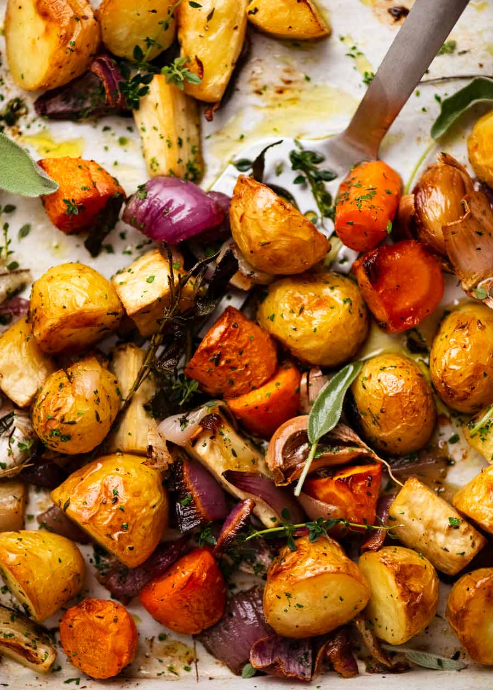

New American Classics: Oven-roasted Vegetables

This recipe takes patience and preparation. Just look at the ingredients, it's all prep. But that's the thing, it's all just prep work! Roasting is easy and this will hone your skils with a knife.
This recipe, depending on how many hands, can take some time: at most one and a half hours from start to end. It feeds many though.
Ingredients:
- Tiny quartered potatoes, 10
- Peeled and trimmed baby carrots, 1 cup (5 oz.)
- Small onion, cut into wedges
- Olive oil, 1/4 cup
- Lemon juice, 3 Tbsp.
- Minced Garlic, 3 cloves
- Snipped fresh rosemary or oregano, crushed
- Salt, 1 tsp
- Pepper, 1/2 tsp.
- Half of small eggplant, quartered lengthwise and cut into 1/2-inch-thick slices, 2 cups
- Medium red or green sweet pepper cut into 1/2-inch-wide strips
Directions:
- In a 13x9x2-inch baking pan combine potatoes, carrots, and onion.
- In a small mixing bowl combine olive oil, lemon juice, garlic, rosemary or oregano, salt, and pepper. Drizzle over vegetables in baking pan; toss to coat. Roast, uncovered, in a 450° oven for 30 minutes, stirring occasionally.
- Remove from oven Add eggplant and sweet pepper; toss to combine. Return to oven;15 minutes more.
Back to home